Let's make the buttons do something. The "Quit" button called the #quitGame method. The easiest thing to do is send #delete to ourselves when we want to exit.
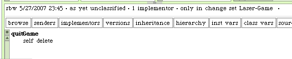Now when we click on "Quit", the morph closes.
The Laser Fire button needs some additional behavior. The label on the button should reflect the action the user will cause to happen when they click the button. Therefore, when the laser beam is off it should say "Fire". When the beam is on is should say "Stop". A few things need to change to make this possible with our current code.
We need to be sure the laser status can be determined and set for the Grid. We also need methods that determine the proper button label depending on that state. And lastly, we will need to be able to change our button's label when the state changes.
For the grid class we wrote a method that answers the laser status.
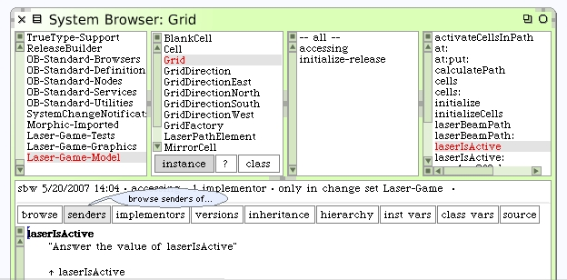If we click on the "senders" button we can see where this is being used.
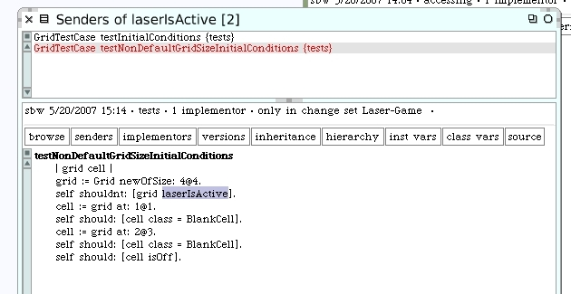Look at both senders. It looks like the only place we test the state is when we ensure it's off. How about senders of the #laserIsActive: method?
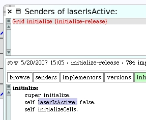The variable is only set when it is initialized. Let's create 2 new methods on Grid to turn the laser on and off. First we write our unit tests.
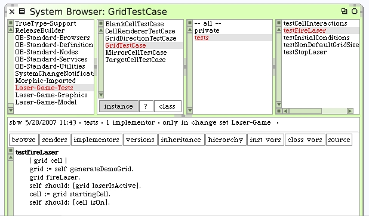The #fireLaser isn't written yet so we have to tell Squeak the method name is okay. Here's the stop laser test. #stopLaser needs to be written too.
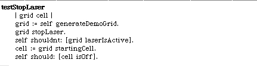These are the new #fireLaser and #stopLaser methods on Grid.
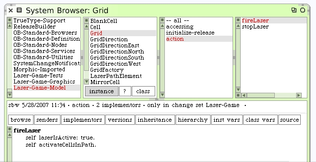 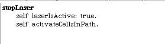That #activateCellsInPath doesn't look correct for the #stopLaser action. We need a method to clear cells when we turn it off. The #activateCellsInPath method shows we will also need a way to clear laser path elements in our new method.
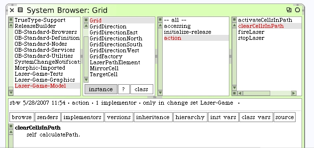The behavior should be simple. We calculate the path but then avoid activating any of its elements. We can fix the stop laser code now.
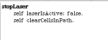Running our unit test we see the new code works.
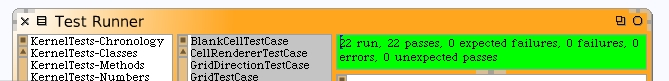